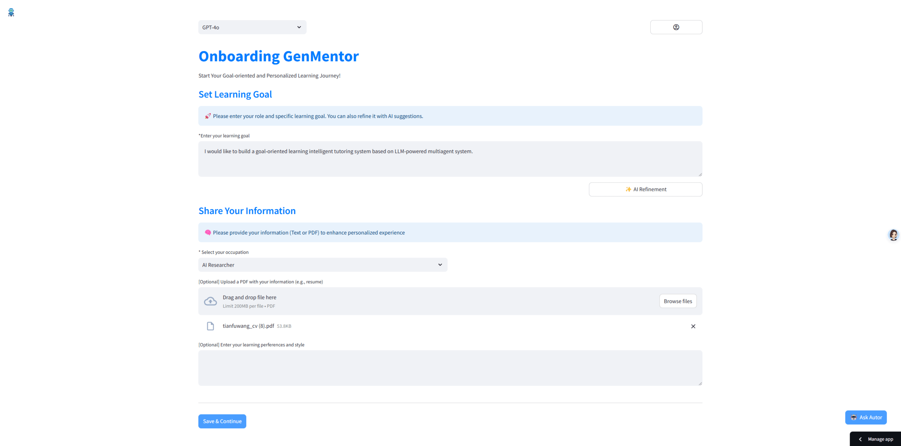
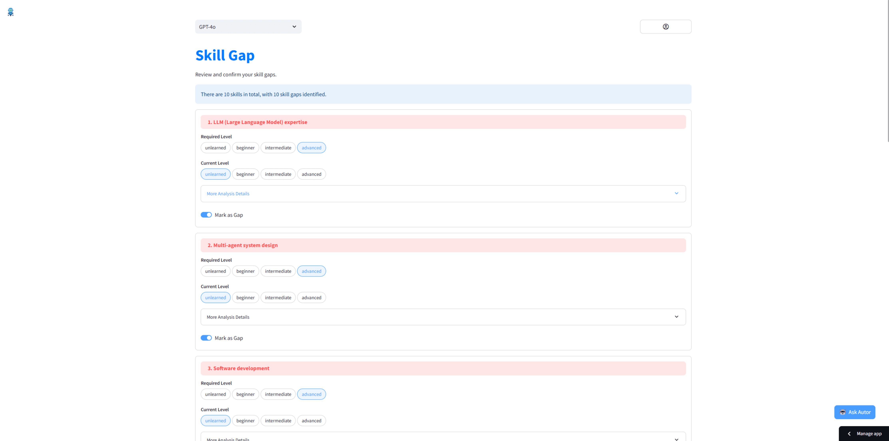
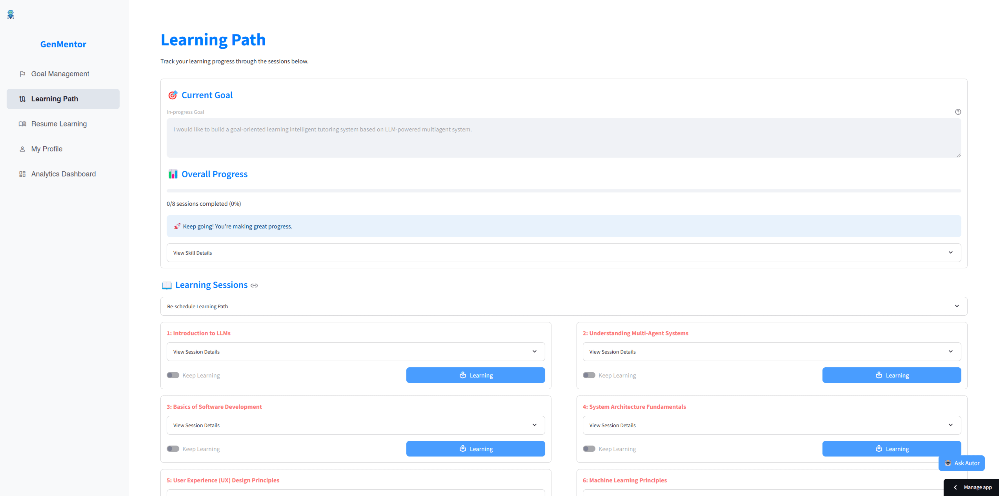
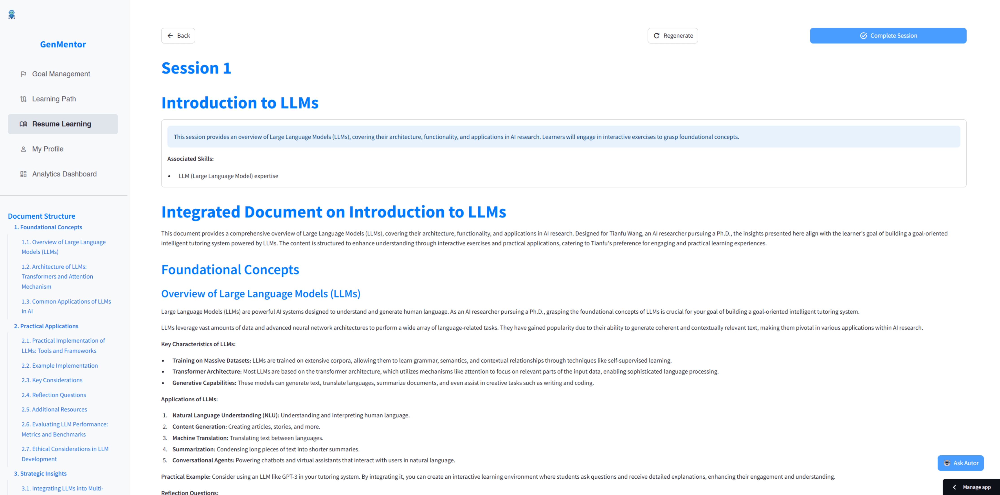
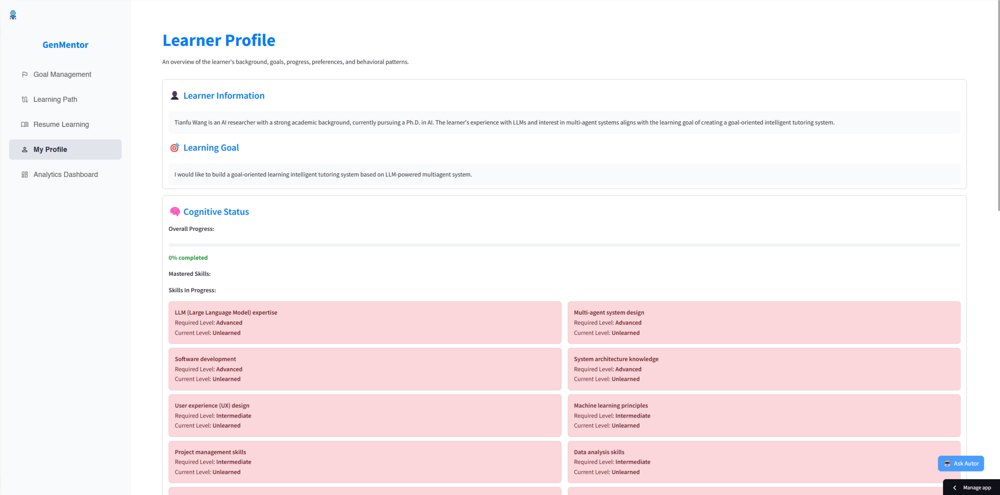
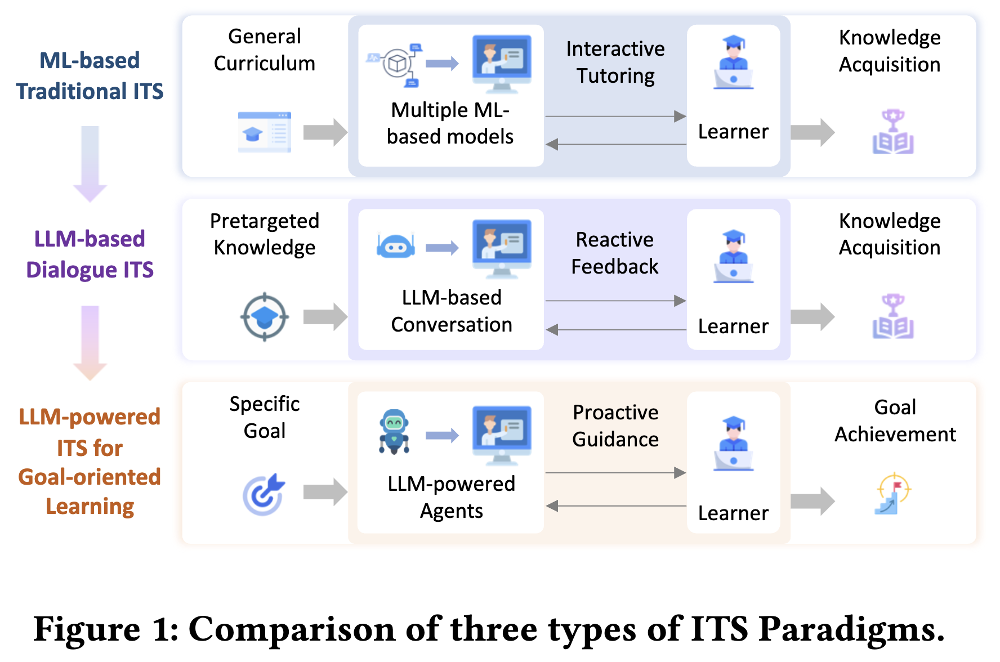
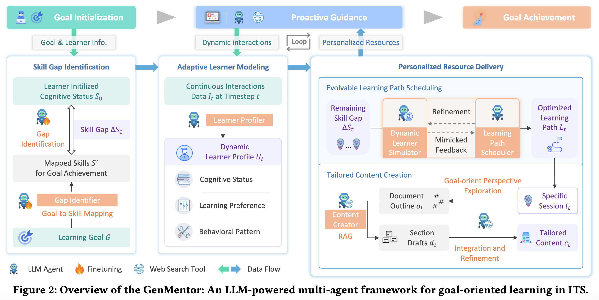
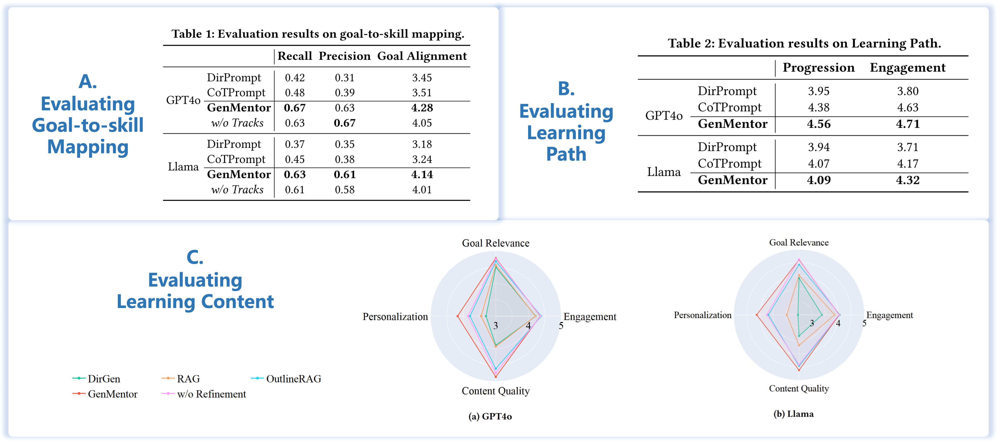
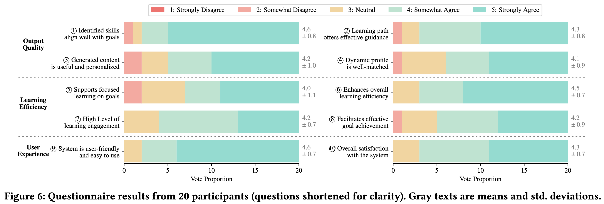

Limitations of Traditional ITS
Existing ITSs rely on static curricula and reactive responses, lacking the ability to proactively guide learners toward specific professional objectives.
GenMentor is an open-source, LLM-powered multi-agent tutoring system for goal-oriented learning: it maps a learner's goal to the skills required, schedules a personalized learning path and generates tailored content. Accepted to WWW 2025 (Industry Track) as an oral presentation. Try it in your browser at genmentor.aurax.live.
1Hong Kong University of Science and Technology (Guangzhou) 2Microsoft 3Microsoft Research Asia †Corresponding authors
WWW 2025 (Industry Track) · Oral Presentation





01 · Overview
Intelligent Tutoring Systems (ITSs) have revolutionized education by offering personalized learning experiences. However, as goal-oriented learning, which emphasizes efficiently achieving specific objectives, becomes increasingly important in professional contexts, existing ITSs often struggle to deliver this type of targeted learning experience.
In this paper, we propose GenMentor, an LLM-powered multi-agent framework designed to deliver goal-oriented, personalized learning within ITS. GenMentor begins by accurately mapping learners' goals to required skills using a fine-tuned LLM trained on a custom goal-to-skill dataset. After identifying the skill gap, it schedules an efficient learning path using an evolving optimization approach, driven by a comprehensive and dynamic profile of learners' multifaceted status. Additionally, GenMentor tailors learning content with an exploration-drafting-integration mechanism to align with individual learner needs.
Extensive automated and human evaluations demonstrate GenMentor's effectiveness in learning guidance and content quality. Furthermore, we have deployed it in practice and also implemented it as an application. A practical human study with professional learners further highlights its effectiveness in goal alignment and resource targeting, leading to enhanced personalization.
02 · Motivation
Why professional learners need a tutor that starts from the goal, not from the syllabus.
Existing ITSs rely on static curricula and reactive responses, lacking the ability to proactively guide learners toward specific professional objectives.
Modern professionals acquire targeted skills for specific goals; without clear guidance, the motivation and efficiency of learners may decline.
Our approach emphasizes efficient goal achievement through personalized skill identification, adaptive learning paths, and targeted content delivery.
Evolution of ITS Paradigms

03 · Architecture
Three cooperating agents turn a goal into a skill gap, a schedule and tailored content.

04 · Evaluation
LLM-based automated evaluation of each component, plus an end-to-end study with professional learners.


05 · Demo
06 · FAQ
GenMentor is an LLM-powered multi-agent framework for goal-oriented learning in intelligent tutoring systems (ITS). It maps a learner's goal to the skills required, identifies the skill gap, schedules a personalized learning path and generates tailored content. The work was accepted to the WWW 2025 Industry Track as an oral presentation, and the code is open source on GitHub.
A MOOC follows a static syllabus and a chatbot tutor answers questions reactively. GenMentor is proactive: it starts from the learner's goal, plans the path to reach it and adapts that path as a dynamic learner profile evolves, so every resource is tied to a concrete objective.
A Skill Gap Identifier, built on an LLM fine-tuned with a custom goal-to-skill dataset; an Adaptive Learner Modeler that maintains a multifaceted learner profile; a Learning Path Scheduler driven by an evolving optimization approach; a Tailored Content Generator that uses an exploration-drafting-integration mechanism; and an AI tutor chatbot for in-context help.
Through LLM-based automated evaluation of skill identification, learning-path quality and content generation, plus an end-to-end user study with professional learners. In the automated evaluation, goal-to-skill recall reached 0.67, and learners rated learning-path engagement 4.71 out of 5.
Yes. A live demo runs at genmentor.aurax.live with nothing to install. To run it locally, follow the repository's README quick-start and supply your own LLM API key (OpenAI and DeepSeek are supported out of the box). A lightweight Streamlit preview with limited functionality is also hosted at gen-mentor.streamlit.app.
Cite the WWW 2025 paper, DOI 10.1145/3701716.3715244. A BibTeX entry is provided in the Citation section below.
07 · Citation
Published in Companion Proceedings of the ACM on Web Conference 2025 (WWW '25), Sydney.
DOI 10.1145/3701716.3715244
· arXiv:2501.15749
@inproceedings{www-2025-genmentor,
title = {LLM-powered Multi-agent Framework for Goal-oriented Learning in Intelligent Tutoring System},
author = {Wang, Tianfu and Zhan, Yi and Lian, Jianxun and Hu, Zhengyu and Yuan, Nicholas Jing and Zhang, Qi and Xie, Xing and Xiong, Hui},
booktitle = {Companion Proceedings of the ACM on Web Conference 2025 (WWW Companion '25)},
year = {2025},
publisher = {ACM},
doi = {10.1145/3701716.3715244}
}